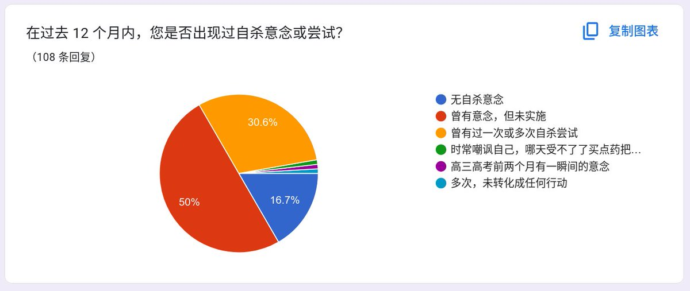

池鱼鱼🍥🏳️⚧️
@Chiyuyu520
不要小看mtf的自杀率，我们这两天收集到的问卷数据里有自杀倾向的已经达到了84%。这还这是这两天收集到的数据
如果真的再次出现买药困难自杀的人会很多很多

池鱼鱼🍥🏳️⚧️
@Chiyuyu520
最近卖日雌的药商不做了很多，这让我很警觉。
我有一个预感，让我很不安。
如果药商都不做了，那么可能跨性别因买药困难造成的第二次自杀浪潮就要来了。这件事已经在网络禁止售卖雌二醇的时候发生过一次了。
几乎所有mtf都依赖药商提供的药物，撑不下去是真的会自杀的 https://t.co/XCV9MuNCKY